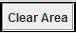
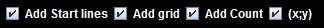
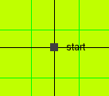
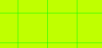
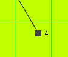
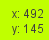
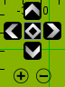

|
| Contents :: Online Forum |
The plotting window looks like the picture below and is the 2D orienteering system for AutoPilot. It allows you to choose a starting location and then plot the course of your robot.

This is the coloured area and is where your robots journey takes place. It is where you can draw, plot and tell your robot where to go.
To use the plotting window, click once on the canvas to choose where you want to start from. Then, every click you make after that (on the canvas) will be recorded as a point. These points are where the robot will go to. Autopilot automatically calculates the distance and turns involved. Use the grid and measurements to work out how far you want it to go, or use the Input Window.
Remove
This function is not yet available.
This removes any one of the points that you choose after you have selected this.
Clear Area

This clears the entire canvas with all the points.
These are the options at the top of the plotting area. These can also be found under the map tools menu.

Add start lines
 This helps you find where your starting point is and also keeps your working accurate and straight.
Add grid
 This is the green grid you see in the on the canvas.
Add count

This is the number next to the points on the canvas that tells you how many things the robot has done up to and including itself. If you want to know why it counts in even numbers (I didn't know either and had to ask Dylan), it's because it includes the turns that it calculates itself and doesn't number.
x;y

This is the option that puts the exact co-ordinates of your mouse cursor next to it.
This is the 4 arrows in the top left corner of the canvas. These functions move your canvas around. The button in the centre moves the canvas so that your starting point is centre on the screen.
